Design to attract, convert and
delight your customers
The structure of the ARQUITO HTML template:
All Revolution sliders are built with plugin Revolution jQuery Slider, you can find documentation here
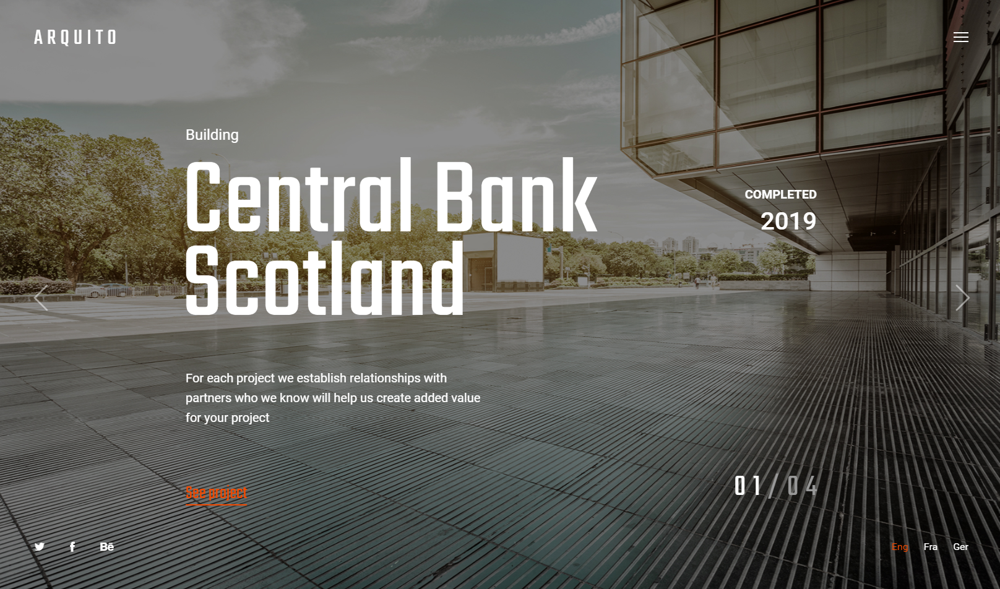
The slider consists of layers, in them you can set the position of the elements using data-x, data-y, data-hoffset, data-voffset
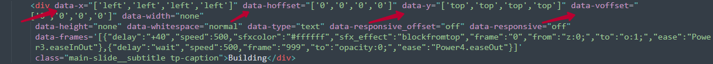
The main image of the each slide is in the folder img
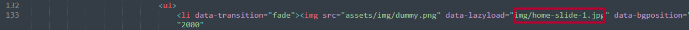
Also full documentation you can find here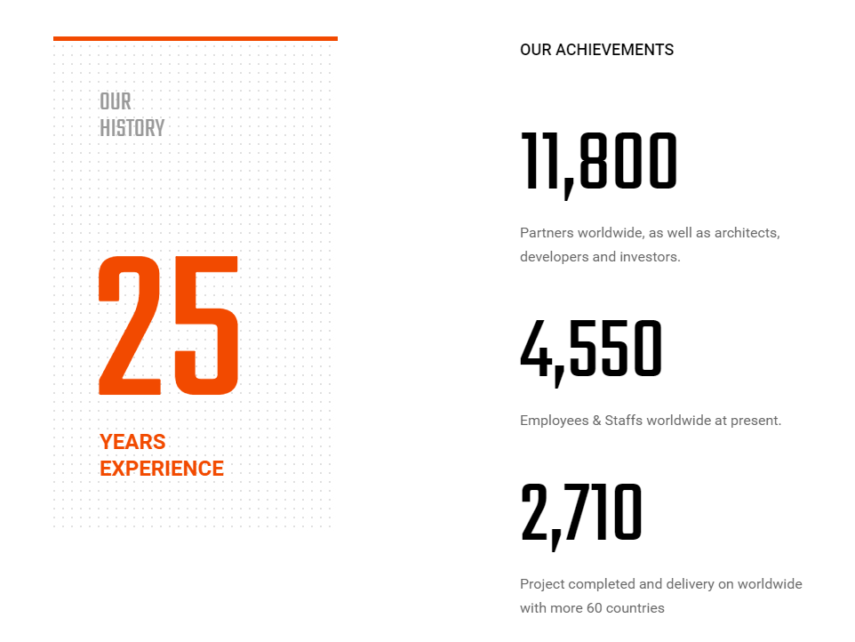
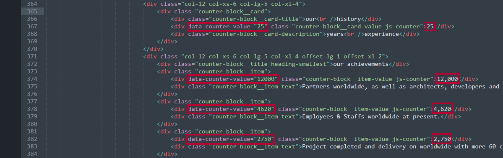
Swiper slider works with Swiper jQuery plugin. It's easy to customize, see documentation
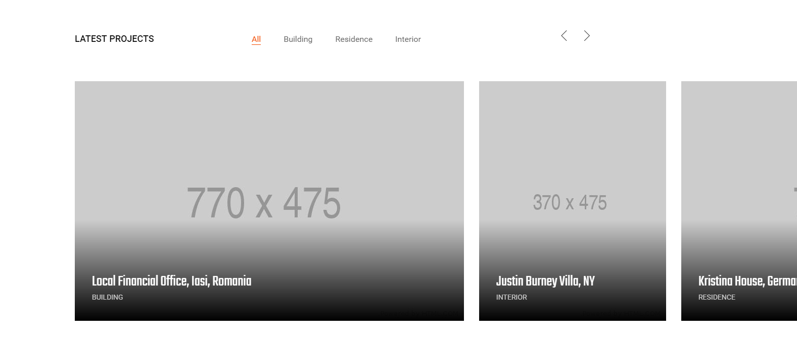
Change data-value here:
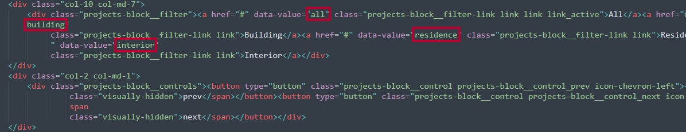
Then change same name in data-filter here:
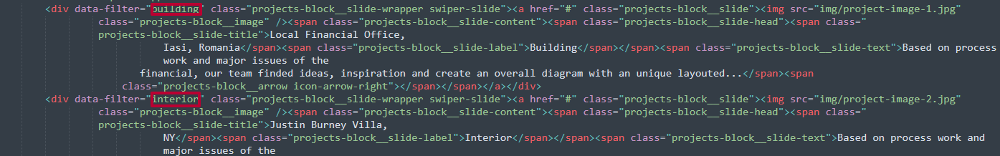
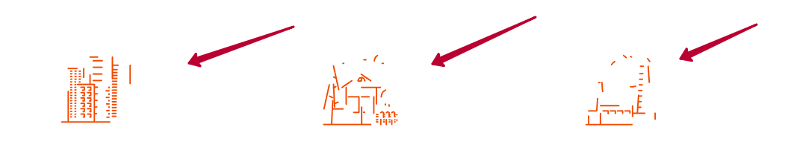
To remove animation effect on scroll delete class js-motion-svg from object
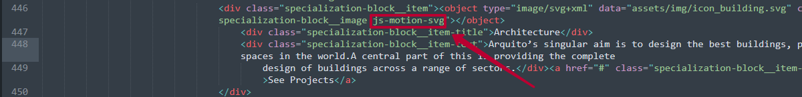
Home parallax piling works with jQuery PagePiling plugin
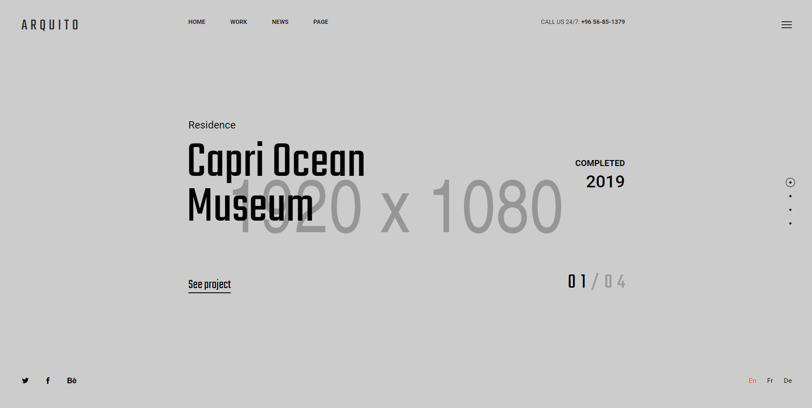
To make white text in section add classes full-screen-block__slide and full-screen-block__slide_dark
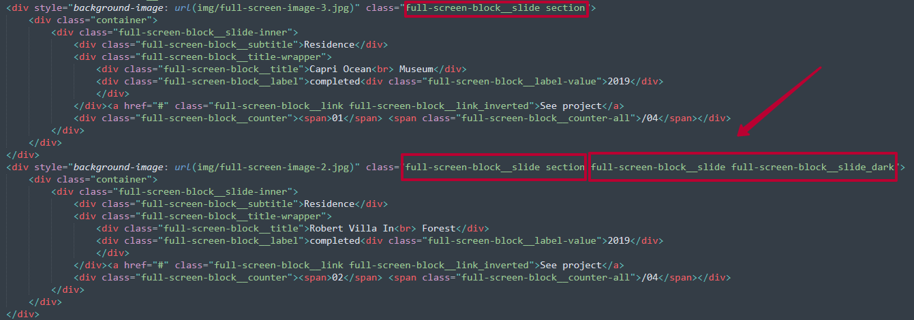
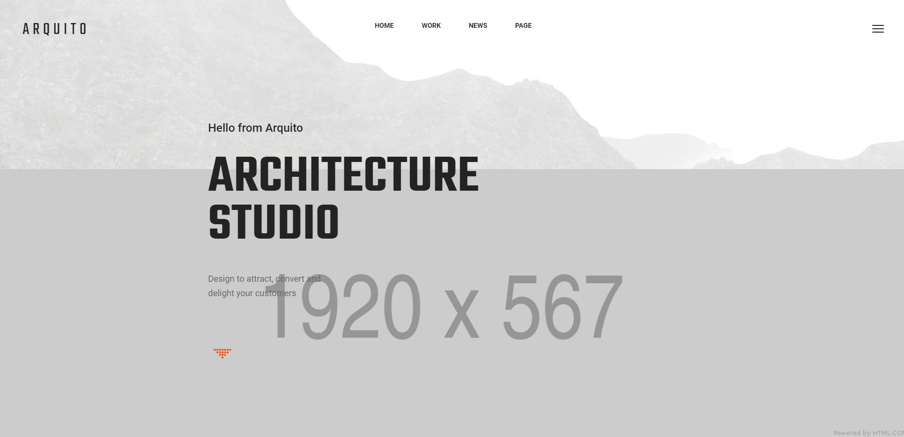
Zoom parallax consists of two images:
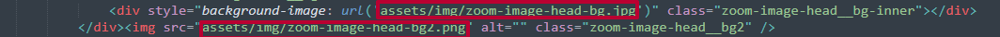
Text animation is created for these classes:
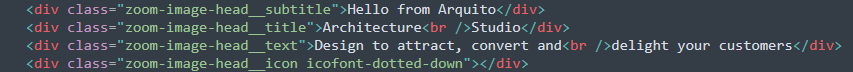
Go to theme.js to change all animation code:
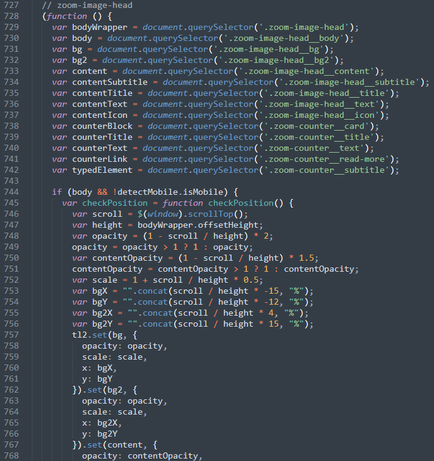
Panorama is addon of revolution slider and built with plugin Revolution jQuery Slider, you can find documentation here
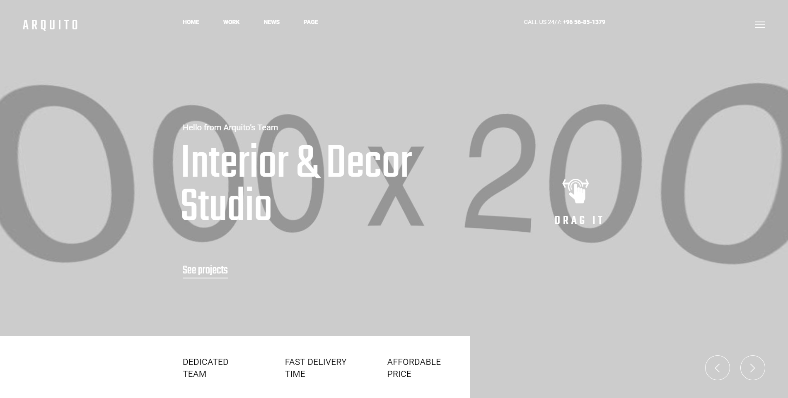
the panorama images are in the img/panorams folder
1. First of all you will need panorama image 360 degree, we recommeded 4000x2000 px. Our demo panorama images was downloaded from shutterstock
2. Optimize size for fast load, we optimized it on tinypng
3. Replace it in img/panorams folder
We got 2 HTML pages home-studio.html with distortion water effect and home-studio-image.html with static image
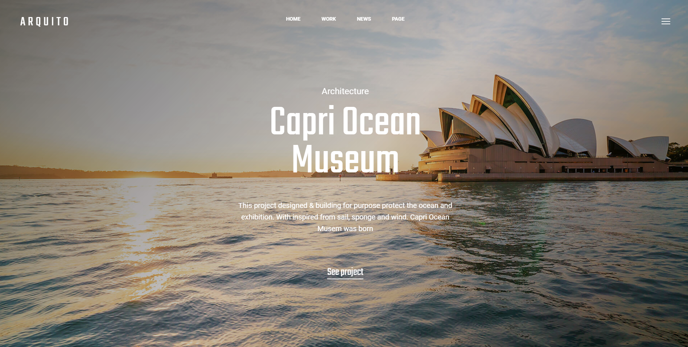
Main image is distortion.jpg
Background-canvas - this is the code initialization class that is located in assets/js/water.js
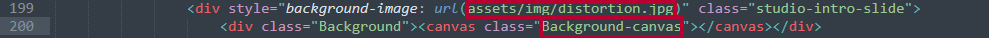
water.js
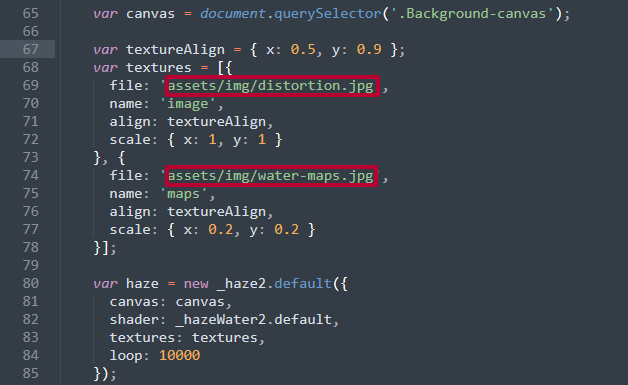
So you will need water-maps.jpg like in our example, make it on the base of the main distortion.jpg using photoshop
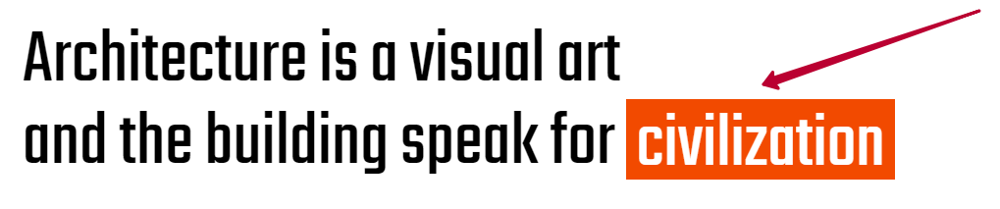
This text can edit via theme.js
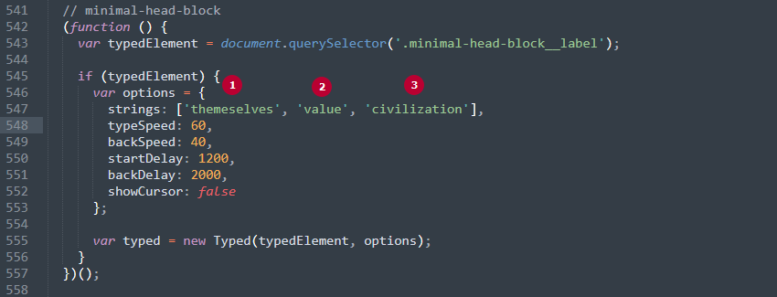
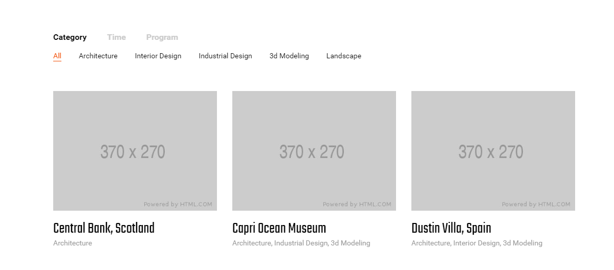
Each filter has a data attribute
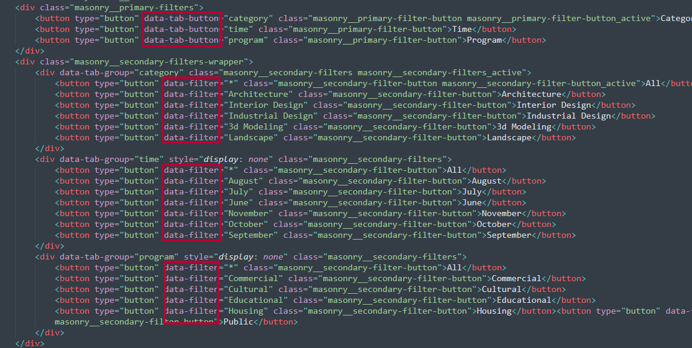
Each item has the same data-filters
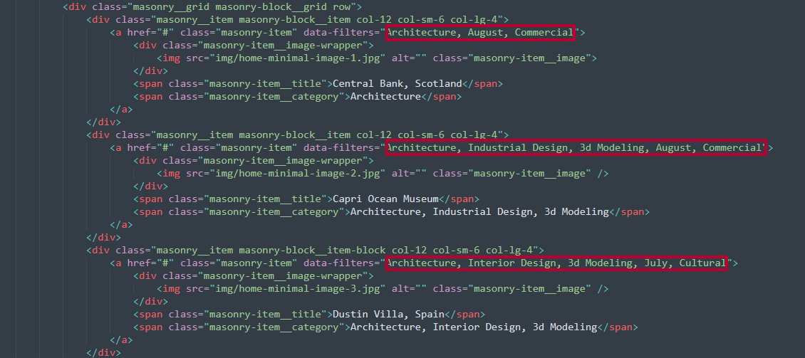